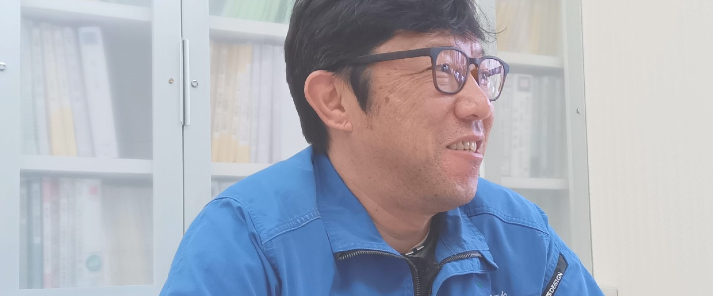
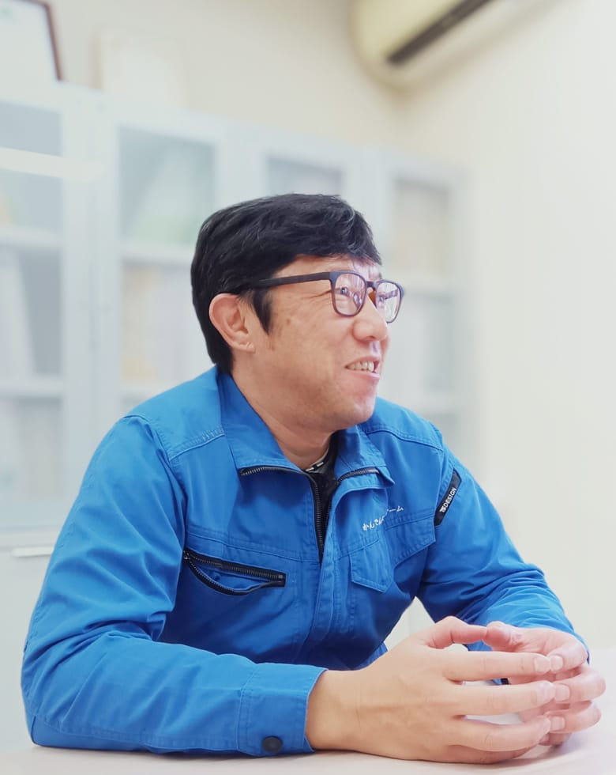
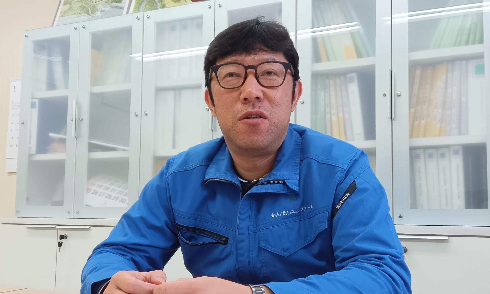
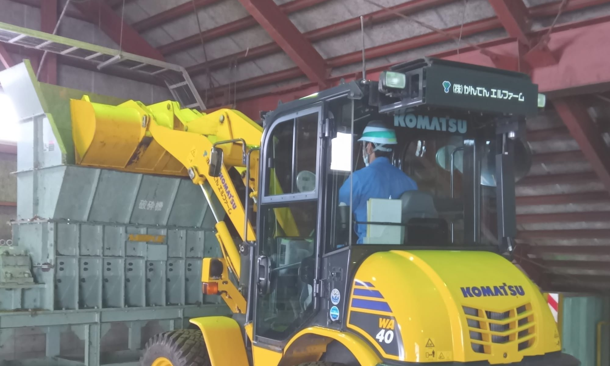
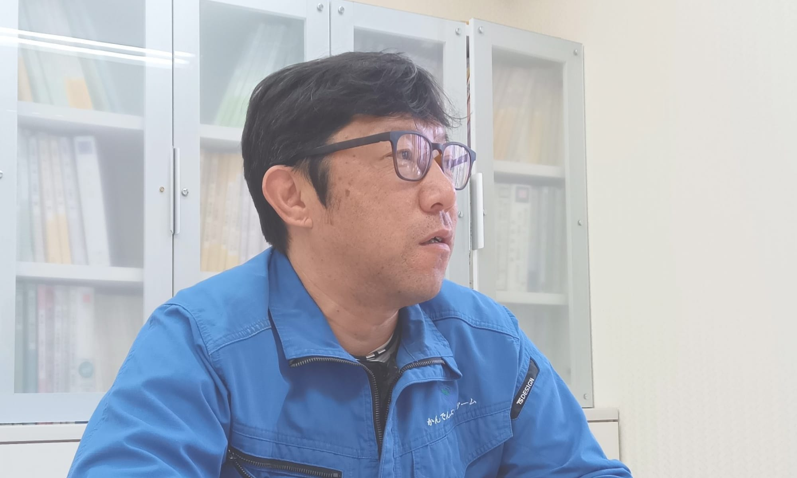
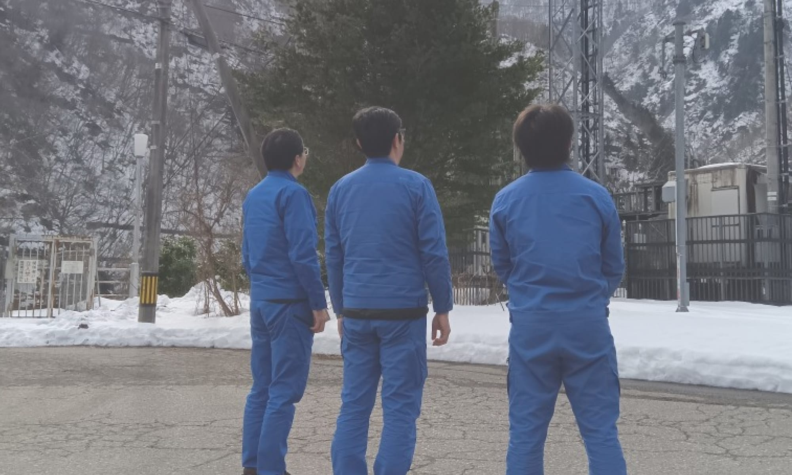
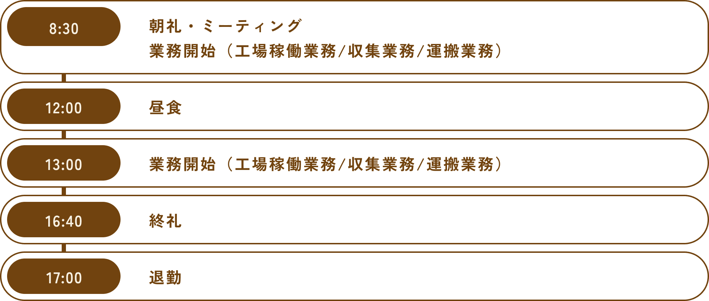
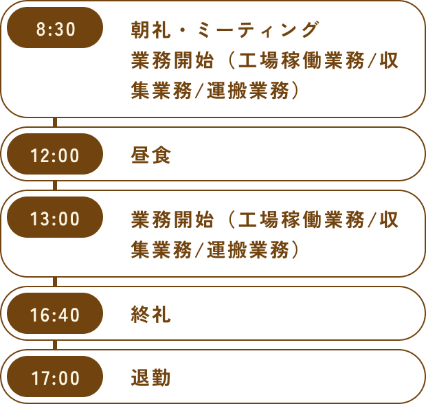

現場の架け橋となり、
社員ひとりひとりの力を最大限に支える
勤続年数：15年
現場管理 担当
K・K
父親との縁と、創業者の熱意
実は、私はもともと印刷会社で働いていました。
全く異なる業種への転職でしたが、エルファームでは父親が働いていたこともあり、縁を感じていました。
そして、何より当時の創業者の社長の姿に心を動かされたんです。
その社長はとても情熱的で、「ダム流木を収集するだけでなく、流木を商品化して事業を拡大し、会社を成長させたい」と熱意を語る姿に感銘を受け、「この人と一緒に仕事をしてみたい」と強く思い入社を決意しました。

入社後は営業企画としてノベルティや商品企画など、新しい取り組みにも関わることができました。
その後、会社の方針転換によって現場業務に移ることになりましたが、会社が目指す環境保全や持続可能な未来への理念に触れ続けられたことは、大きな経験となっています。
印象深いのは、初めて会社のホームページができた頃のことです。
当時、まだ環境保護やSDGsへの関心が一般的ではない時代でした。
今、誠実に情報を発信し続けた理念が、時代の流れと一致しているのを感じます。
この会社の創業者が描いたビジョンは、時代の先を見据えたものでした。
今後もその精神を受け継ぎ、常に新しい挑戦を続けられる会社でありたいと考えています。

幅広い業務を通じて実感するやりがい
私の仕事は、現場業務と従業員のマネジメントが中心です。
毎朝の朝礼でその日の作業内容や安全確認を共有し、工場スタッフには流木の加工や仕分けを、ダムスタッフには回収作業の指示を行っています。
ダムでの作業は天候に左右されるため迅速で的確な判断が欠かせません。
雨が降った後には流木が大量に流れ込むため、安全を徹底しながらダムの機能維持に努めています。依頼元から感謝の言葉をいただけると、やはりとても嬉しいですね。
流木回収は環境保護や社会基盤の維持に欠かせない重要な役割を果たしており、責任感を持ちながら取り組むことで、誇りとやりがいが得られる仕事です。

未来にむけた挑戦と、社員のつながり
私の目標は、社員一人ひとりが力を最大限に発揮できる環境を作ることです。
主体的に仕事を進められる体制を心掛け、必要なときには的確なサポートができる存在を目指しています。「失敗も経験のうち」と考え、挑戦しやすい雰囲気を大切にしながら信頼関係を築いていきたいと思っています。
エルファームでは、社員同士の助け合いが自然と根付いた風土があります。
距離の近い環境だからこそ意見が反映されやすく、挑戦を続けられる会社であると感じます。社員全員で環境への貢献という理念を共有し、未来をともに築いていける会社の実現を目指しています。

エルファームの魅力とは
15年前、異業種からエルファームに転職し、環境保全の分野に挑戦を始めました。不安もありましたが、資格取得支援制度や働きやすい環境に助けられ、次第にこの仕事に誇りを持てるようになりました。
風通しの良い職場環境のおかげで社員同士の意見を共有しながら新たな気づきや工夫を積み重ね、異業種出身者ならではの視点を活かせる喜びも感じています。
挑戦を続ける中で自分自身の成長と会社への貢献を実感できることが日々のモチベーションになっていますね。
これからも培ってきた経験を活かしながら環境保全事業に取り組み、社員同士の連携を大切にしながら会社の発展に貢献していきたいです。
K・Kさんの１日の流れ


※所属・役職等は全て取材当時（2025年）のものです。